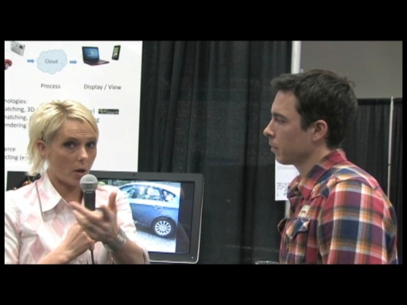

Posts - Laura Foy
 Build 2013 Hackathon Winners [0:01:51] [2013/07/04]
Build 2013 Hackathon Winners [0:01:51] [2013/07/04]This year's Hackathon, we had over 500 participants building an app from scratch in 50 hours for Windows Store, Windows Phone, and/or Windows Azure for a chance to win $24,000 in prizes! Check out the…
Introducing Four New Creative Experiences on Socl! [0:13:41] [2013/06/19]Microsoft Research's FUSE Labs unveiled today four new create experiences on Socl (http://www.so.cl/), MSR's unique social network committed to the expression of ideas through visually rich posts that…
Microsoft Intern Hack-A-Thon [2012/08/17]The Microsoft Developer Division hires students for a summer internship each year, and these interns were given a special chance last week to test their skills at building applications. It was called…
The new Bing...your questions answered [0:21:36] [2012/05/17]There has been quite a lot of buzz going around about the updates and changes to Bing. So we thought it was a prime opportunity to speak to the design manager,Robert Dietz and program manager, Nathan…
Connect 4 at South by SouthWest [0:05:41] [2012/03/16]Another original design by the brilliant minds at Frog, SXSW proved to be a showcase for hardware and software interracting and this blew the crowd away at the opening party. Enjoy.
Electro Tennis at South by SouthWest [0:03:48] [2012/03/13]Do you love Pong? Sure! We all do! Well the brainiacs at Frog decided to take the classic arcade game and bring it to the next level. This is one of the masterpieces they showed off at the Interactive…
Light Trikes at South by SouthWest [0:04:01] [2012/03/13]Frog and Microsoft threw one giant opening party for the Interactive track...and they did so by throwing an interactive PARTY. Check out this video to see one of the manifestations of the idea: …
BoxingBots at South by South West [0:06:53] [2012/03/12]The boys at Coding4Fun really out-did themselves this time. They created Kinect-Driven Pneumatic Boxing Robots and showed them off to the party-goers at last nights opening party for the SXSW…
TechFest 2012: 3D Facial Animation [0:04:56] [2012/03/08]TechFest is one of my favorite conferences each year because we get a little insight into what the powerful mids at Microsoft Research are working on. In this demo, you'll see what the future of 3D…
TechFest 2012: Cliplets [0:05:53] [2012/03/07]TechFest is the annual conference where Microsoft Research shows off all the amazing work they have been up to this year. In this video you'll enjoy project "Cliplets" which literally blurs…
Kinect to Kill: A Channel 9 Halloween Special [0:08:11] [2011/10/30]It's that time of year again...when the ghost and the goblins come knocking at your door. This year we invite you to watch a story about friendships, love, horror and of course- a crazy serial killer!…
Imagine Cup: The Redmond Judging [0:01:40] [2011/04/12] Over 74,000 students in the U.S. registered for the Imagine Cup which is like the Olympics for technology. Watch some of the planet-saving ideas in software and game design as students prepare for…
TechFest 2011: Mirage Blocks [0:08:26] [2011/03/11] This research demonstrates the use of 3-D projection, combined with a Kinect depth camera to capture and display 3-D objects. Any physical object brought into the demo can be instantaneously…
TechFest 2011: 3D Photo-Realistic Talking Head [0:06:26] [2011/03/10] This research showcases a new, 3-D, photo-real talking head with freely controlled head motions and facial expressions. It extends our prior, high-quality, 2-D, photo-real talking head to 3-D. First,…
TechFest 2011: 3D Scanning with a regular camera or phone! [0:05:41] [2011/03/10] 3-D television is creating a huge buzz in the consumer space, but the generation of 3-D content remains a largely professional endeavor. Our research demonstrates an easy-to-use system for creating…
TechFest 2011: Facial Recognition in Videos [0:09:37] [2011/03/10] Face recognition in video is an emerging technology that will have great impact on user experience in fields such as television, gaming, and communication. In the near future, a television or an Xbox…
TechFest 2011: Mobile Photography- Capture, process and View [0:07:01] [2011/03/09]
The mobile phone is becoming the most popular consumer camera. While the benefits are quite clear, the mobile scenario presents several challenges. It is not always easy to capture good photos.…
TechFest 2011: ShadowDraw [0:05:45] [2011/03/09] Do you want to be able to sketch or draw better? ShadowDraw is an interactive assistant for freehand drawing. It automatically recognizes want you’re trying to draw and suggests new pen strokes for…
12 Year old kid develops for Windows Phone! [0:05:48] [2011/03/01] Elliot Forde is just like any other 12 year old. He likes to hang with his friends, play video games and wrestle with his dog. The difference is Elliot is a self taught Windows Phone developer whose…
The Garage Science Fair [0:07:40] [2011/02/22] The Garage Science Fair is a quarterly event at Microsoft that gives employees an opportunity to showcase their work. In this video we take a look at three of this year's demos: (1) .NET Gadgeteer…
Matt Bencke discusses news and Demos from Mobile World Congress [0:10:17] [2011/02/17] Matt, who is the new head of developer and marketplace for Windows Phone 7, takes us through his favorite new apps from Mobile World Congress.
Movalys Dashboard for Windows Phone 7: News from Mobile World Congress [0:02:37] [2011/02/16] "Movalys Dashboard" allows the user to view dashboards with data of our other product "Movalys Intervention". This product manages maintenance interventions and optimizes the…
La Monde Demo on Windows Phone 7 from Mobile World Congress [0:02:58] [2011/02/16] Steve Ballmer showed off this app in the keynote and we met up with the actual developer to show us the ins and outs of the La Monde app for Windows Phone 7.
Xbox LIVE & Windows Phone 7 from Mobile World Congress [0:05:42] [2011/02/16] Take a tour of the Microsoft booth from Mobile World Congress. Also watch as we demo the hottest new features and functionality of Xbox LIVE on Windows Phone 7.
SlingBox on Windows Phone 7 from Mobile World Congress [0:03:13] [2011/02/16] This is one of the most exciting apps out there for Windows Phone 7. Take a look at the new functionality of Sling Box- a must have for TV fans!
P2i waterproofs your phone: News from Mobile World Congress [0:04:35] [2011/02/16] Have you ever gotten your phone wet? It's a nightmare! I found this company called P2i at Mobile World Congress that is working on a new technology to waterproof our phones. Check it out!
Windows Phone 7 announcements from Mobile World Congress 2011 [0:04:57] [2011/02/15] Channel 9 has arrived in Barcelona and Brandon Watson took some time to chat with us about all of the announcements Windows Phone 7 is making here. One of the biggest pieces of news is the Nokia…
Project Emporia on Windows Phone [0:09:39] [2011/01/26] Project Emporia is brought to you by Microsoft Fuse Labs located in Cambridge, United Kingdom. This app for the Windows Phone (and also available on the web) re-defines what a newspaper is with the…
Office 2010 & Windows Phone at CES 2011 [0:03:46] [2011/01/11] I ran into Doug Thomas backstage at the Microsoft boothe at CES 2011. He wanted to take a minute to show all of you how Office 2010 and Windows Phone helps him stay connected amidst all the chaos.
Windows Phone 7 at CES 2011 [0:03:25] [2011/01/08] Greg Sullivan gives us a tour of what's happening for Windows Phone 7 at CES 2011. The new devices look stellar!
Silverlight vs XNA for Windows Phone 7 [0:13:16] [2010/12/24] Sean McKenna and Talon Ireland came down to discuss a few things they learned from building Unite in Silverlight on Windows Phone 7. They go over: - Pros/cons of silverlight vs. xna for…
Crackdown 2 Project Sunburst on WP7 & Xbox LIVE [0:09:48] [2010/12/02] Project Sunburst is the latest Crackdown title and brilliantly uses real-time backdrops from Bing Maps, based on your location, to provide an endless array of gameplay environments. The game uses…
Behind the Scenes at PDC 2010 [2010/11/03] PDC may happen physically here in Redmond, but it's really a global event and all of the sessions PLUS the Channel 9 LIVE feed was streamed out over the net. In addition to the content being…
The Killer App: A Channel 9 Halloween Special [0:07:05] [2010/10/29]Windows Phone 7 is almost here and developers are working hard to get the #1 app in the marketplace. Journalists and reporters are scouring the internet to find the next big thing- the Windows Phone 7…
IMDB on Windows Phone 7: Hands on Demo [0:01:04] [2010/10/12] Check out the new IMDb application on Windows Phone 7. The IMDb app helps you seek out current films in addition to storing details about nearly every movie known to man, enjoy!
Fandango on Windows Phone 7: Hands on Demo [0:01:00] [2010/10/12] Here's a look at the new Fandango application on Windows Phone 7. Fandango uses the panoramic theme, but keeps it plain and simple with a white background. You are able to use it to look up show…
A closer look at the new AT&T Windows Phone 7 Devices [0:03:48] [2010/10/12] Here's a look at the AT&T Phones for Windows Phone 7! AT&T will launch three WP7 devices, the LG Quantum, featuring a full QWERTY keyboard for $199.99, the HTC Surround with 16 GB of onboard…
Twitter on Windows Phone 7: Hands on Demo [0:01:02] [2010/10/12]
Today we announced the new hardware devices for Windows Phone 7 and in this video you can see a hands on demo of the new Twitter Application on the HTC phone for AT&T. Coolest thing here is that…
Meet the new Windows Phone 7 Devices [0:02:18] [2010/10/11] Here's a quick look at the new hardware for Windows Phone 7
First Look: Windows Phone 7 Hardware [0:06:07] [2010/10/11] In this video, Microsoft CVP Steve Guggenheimer introduces the new hardware devices that will be offering Windows Phone 7. There's tactile keyboards, slide out speakers, surround sound, enhanced…